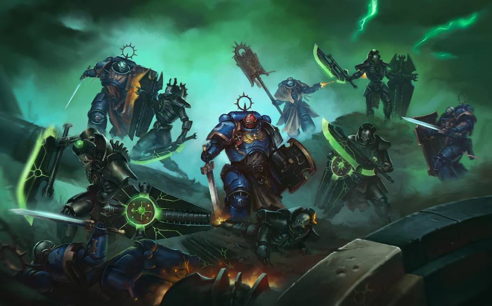

Pariah Nexus
| Pariah Nexus | |
|---|---|
| Part of the Indomitus Crusade | |
 The vanguard of Roboute Guilliman's battlegroups engages Necron legions in the Nephilim Sector Painting by Vitaly Perevoshikov | |
| Date | Early Era Indomitus, in the first decades of the 42nd millennium[a] |
| Location | The Nephilim Sector, on the far side of the Great Rift, and the surrounding regions, among them the worlds Mesmoch, Paradyce, Cherist, Vertigus and Skahren |
| Status | Unresolved. The pylons stand; the Necron dynasties are at war with one another and with the Imperium |
| Belligerents | |
| Imperium | Szarekhan Necrons Szarekhan dynasties and the NihilakhRebel NecronsSautekh Dynasty under ImotekhThird party Szarekhan dynasties and the NihilakhRebel NecronsSautekh Dynasty under ImotekhThird party |
| Commanders and leaders | |
| Szarekh, the Silent KingSzerasImotekh the StormlordOrikan the Diviner | |
| † Killed in action | |
| Strength | |
| The Szarekhan dynasties, with tomb ships and the pylons of the NexusThe Sautekh Dynasty, holding three systems against the Silent King | |
| Casualties and losses | |
| Battlegroup Kallides lost in the null space of the Nexus; Groupmaster Marran killed at Cherist; Ghelf killed destroying a Necron fleet | A major fleet destroyed by Shivarik's Constellation; the legions of Overlord Khutmecc killed by Veridian's Hyper-Alembic; three tomb ships destroyed at Torantis |
| Populations of the Nexus worlds afflicted by the Stilling; Cherist and other worlds lost to the Necrons | |
The Pariah Nexus is a region of the Nephilim Sector, on the far side of the Great Rift, from which the Warp has been cut off by an array of Necron pylons. Within it, psykers are blind, Navigators are helpless, no daemon can manifest and no ship can make the leap through the Immaterium. The Imperium named the region for the Pariah gene, which has a similar effect on a single person; the Necrons call it the Contra-Empyric Nexus. Its mortal victims suffer a creeping affliction called the Stilling, which dulls the will and in time leaves a man alive and empty. The war fought around the Nexus is called the Nephilim War or the Pariah Crusade.[1][2]
The war began when the Indomitus Crusade sent a battlegroup to find out why the Nephilim Sector had gone silent. The battlegroup was attacked, and a larger force under the Archmagos Belisarius Cawl, who wanted the blackstone of the pylons for his own purposes, followed it. At the same time the Necrons themselves fell into civil war, between the dynasties that obey the Silent King, Szarekh, and those that follow the Stormlord Imotekh of the Sautekh. The Imperial forces have been fighting both and have not been able to destroy the pylons. The war was still unresolved at the latest reports.[1]
The Nexus
[edit]Blackstone and the Pariah gene
[edit]The pylons that make the Nexus are built of blackstone, called noctilith by the Mechanicus: a mineral that repels the Warp. It was the same material of which the Cadian pylons were made, which the Necrons had raised in the ancient days to hold back the eruptions of the Warp, the Eye of Terror among them. Belisarius Cawl used them in the last days of Cadia to cut that world from the Warp, and their destruction in the final assault of the 13th Black Crusade is one of the causes proposed for the Great Rift. The overlapping fields of a ring of such pylons make a region where the Warp is silent. The Necrons, who gave up their souls long ago in the biotransference, are not affected by it. Living creatures suffer from it. Psykers lose their powers, Librarians are weakened, astropathic messages fail and Warp travel is unreliable. The rest suffer the Stilling, a growing apathy that drains emotion and, in the end, the will to live. The Mechanicus has compared the effect on the mortal soul to that of a Pariah on those around him, and the Inquisition has long known that the Necrons were studying the gene, though the Imperium has not been able to tell what they wanted from it.[1][3]
Who built it
[edit]The sources do not agree on the origin of the Nexus. The Mechanicus attributes it to the Cryptek Illuminor Szeras, the author of biotransference, who has been seen in the Nephilim Sector with the Nihilakh Dynasty. Inquisitorial accounts hold that it was built on the orders of the Silent King, Szarekh, who has returned to the galaxy, and that it is a plan of his to save the galaxy from the Warp, which he blames for the doom of his people in the War in Heaven. In this reading the Nexus is a drastic cure, which would slowly kill the souls of every living thing in the galaxy but would also end the threat of the Chaos Gods. Szarekh, who lost his own soul long ago, is held to accept the price. The Imperium has not been able to confirm either claim, and the two accounts may be true together, since the Nihilakh are among the dynasties that follow the Silent King.[1]
The Nephilim Sector
[edit]The Nephilim Sector lies in the south of the Imperium Nihilus, in the area between the Segmentum Tempestus and the Ultima Segmentum, near the Charadon Sector and the realm of the Sautekh and Nihilakh dynasties. It was a quiet region, spared many of the disasters of the Noctis Aeterna. Before the Nexus, it contained a number of worlds, among them Paradyce, whose shrines were protected by the Sisters of Battle and the 23rd Paradycian Peltasts, and a series of mining and agri-worlds. Many of them are now empty. Other fronts of the war have touched it. The Nachmund Gauntlet, which is the nearest route through the Rift, has been fought over for years, and the Fourth Tyrannic War has engulfed its western edge.[1]

Course of the war
[edit]Battlegroup Kallides
[edit]The first force sent to investigate was Battlegroup Kallides, sent by Guilliman to the silent sector. It found a region where its enemies were fleeing from something, and where the Stilling struck its psykers and Navigators and made its Warp engines useless. Some of its citizens were left brain-dead. A task force under Groupmaster Marran, sent to destroy the blackstone pylons in the jungles of Mesmoch, in the Zeidos system, was beaten in a disaster. Its Imperial Fists, who tried to evacuate, found they could not take the Warp road, and asked for help from the wider Imperium.[1]

The battlegroup lost battles at Paradyce and Vie Almus and won at Paradyce II. Ultramarines won at Vertigus. With the aid of Sister Ephrael Stern, Kallides attacked the world of Cherist in the Lomorr System, and destroyed the dolmen gates of the Necrons. At Cherist the Epistolary Thengrest gathered the psykers of the world, who were too few for the task, and used them to send a distress call to the primarch of the XIII Legion. Many died in the sending.[1]
Cawl and the Noctilith Decree
[edit]Guilliman, who was occupied with the invasion of Ultramar by Mortarion, could not go himself, and sent Battlegroup Hephaestus under Groupmaster Vikraen, with a large fleet of the Mechanicus. Cawl took the overall command. Rescue was a low priority for him. He wanted noctilith, which he intended to use for devices called liminal abraisers, which would modulate the energies of the Warp and wear away the xenos field. His aim was, as it had been since the end of the first phase of the Indomitus Crusade, to find a way to close the Great Rift. He brought in his train radical tech-priests who were willing to smuggle experimental and forbidden weapons into the Nexus.[1][4]
By the Noctilith Decree, Cawl divided the fleets into two kinds. The aegis fleets were to reinforce and fortify the worlds that had been reached. The accretion fleets were to harvest noctilith for the abraisers. The first aegis fleets found Kallides and the forces of the Order of Orphaeus at Paradyce, where the Magos Eradicatus Psolt helped to destroy the Necrons. Two aegis fleets, those of T'reshent and Qrang, were wiped out. Marran died in the defence of Cherist, killed by a Necron assassin; the Ministorum has made him a saint. The officers Arnulf and Stornvor, who had been sent to reinforce the Lomorr System, were missing and believed dead beyond Tredica.[1]
The Necron civil war
[edit]In the battle at Vertigus the Necrons suddenly broke off the fight. Cawl deduced that they were at war with each other. He was right. The Sautekh Dynasty under Imotekh the Stormlord had denounced the authority of the Silent King and seized three systems, and the dynasties loyal to Szarekh had gone to the war against them. Szarekh, deciding that the humans must be dealt with first, set his forces to destroy the accretion fleets. Orikan the Diviner, who had foreseen the catastrophe but could not prevent it, went over to Imotekh.[1]

The war between the Necrons grew more terrible. By a decree of Szarekh, the use of superweapons was permitted to both sides. A war fleet commanded by Oradi used an Ark of Oblivion at Torantis, destroying three tomb ships, but the weapon harmed the ships of the Necron Behzt as well, and her counter, a black hole, consumed her forces and a third of the mass of the world. At Iash'Uddra the Eyes of the Void broke the planet into swarms of canoptek scarabs that drove the Skitarii who landed mad. Veridian's Hyper-Alembic killed the legions of the Overlord Khutmecc. The plasmancers of Szarekh unleashed a bound dwarf star at Zann, and a Chalice-class cruiser freed it. The Nihilakh Crypteks released ten shards of the C'tan at Zeta IIX Hespus. Cawl tried to end the war, but the pylons jammed astropathic messages, and some of his magi ignored him.[1]
Imotekh withdrew from the field to fortify his territory. Magos-Cantic Lundkest and her Skitarii held the Sautekh at Vergoyz Alphic, while Inquisitor Draxus destroyed a pylon on the world. Draxus later told Cawl that Szeras had sent Deathmark assassins after him.[1]
Skahren and the Arkifane
[edit]At Santis-Magna, the Myrmidominus Ghelf, an officer of the Mechanicus, drove the Necrons back and went after the noctilith there, but could not destroy the pylon on Skahren's Coil. It was at this point that the daemon Vashtorr corrupted him, according to the report, and Ghelf activated a device called Shivarik's Constellation, which destroyed a major Necron fleet and killed him in the feedback. The pylon at Skahren became an empyric amplifier, and Vashtorr emerged from it with his world, Wyrmwood, and tore a rift into realspace. His plans for the pylon network are unknown. Szarekh, to guard against the new danger, turned part of his forces away from the Imperium, and gave the Imperial forces a reprieve. Guilliman, at the head of a fleet of Fleet Primus, was reported on his way.[1][5]
The record of Paradyce
[edit]The best known account of the early war is the testimony of the survivors of Paradyce, a shrine world whose defenders, the Paradycian Peltasts, were crippled by the Stilling and could not fight. The Sisters of Battle held the planet alone. When the Necrons came, the world was lost. A handful of Imperial survivors, among them Sister Danica, a hard-bitten Battle Sister with a grudge against the Necrons, and a Salamanders Space Marine called Sa'Kan, who had come down in a failed relief and was the only survivor, held out in the ruins. A Cadian trooper who fought at Danica's side is said by the Sisters to have been a figment: she had died earlier. In the last hours, Szeras, who was making a study of the dying planet, sent a Deathmark assassin to hunt the survivors. Danica was shot and survived. Sa'Kan killed the Deathmark and lost an arm, and Szeras refused to repair him, calling him a waste of parts. The city fell, and the Imperial military, who saw signs of the Stilling on the children Sa'Kan had saved, put them to death.[6]
Assessment
[edit]The Pariah Nexus is regarded by the Mechanicus and by the Inquisition as one of the gravest dangers of the Era Indomitus, not for what the Necrons might do with it but for what it would do if it succeeded. A Warp that has been shut off in a sector may be an advantage in the war against Chaos. But the Stilling is a certain price, and the Necron civil war has already put weapons in play that could wipe out whole systems. Imperial scholars add that the relation of the pylons to the Great Rift is not understood. The disagreement between Cawl and the traditionalists, who see his use of xenos technology as heretical, has been sharpened by the war.[1][2]
The Imperial archives record, as of the latest dispatch, that the pylons still stand. The Silent King is in the field. Imotekh is in his fortresses. Battlegroup Kallides is, for most purposes, lost, and a later Imperial record of the Nephilim War lists it as feared lost in the null space of the Nexus.[1]
Timeline
[edit]| Date | Event | Theatre |
|---|---|---|
| Early M42[b] | Battlegroup Kallides is sent by Roboute Guilliman to the silent Nephilim Sector and is attacked | Nephilim Sector |
| Early M42[c] | A task force under Groupmaster Marran is beaten while trying to destroy the blackstone pylons at Mesmoch | Zeidos system |
| Early M42[d] | Battlegroup Kallides loses at Paradyce and Vie Almus, and wins at Paradyce II and Vertigus | Paradyce |
| Early M42[e] | Paradyce falls to the Necrons; Sister Danica and the Salamander Sa'Kan hold out in the ruins | Paradyce |
| Mid M42[f] | Belisarius Cawl takes command of Battlegroup Hephaestus and issues the Noctilith Decree | Nephilim Sector |
| Mid M42[g] | The aegis fleets of T'reshent and Qrang are wiped out; Marran is killed defending Cherist | Cherist |
| Mid M42[h] | The Necrons break off the battle at Vertigus, revealing the Necron civil war | Vertigus |
| Mid M42[i] | Superweapons are used on both sides, including an Ark of Oblivion at Torantis and the Eyes of the Void at Iash'Uddra | Torantis |
| Mid M42[j] | The Hyper-Alembic at Veridian and a bound dwarf star at Zann are used, and the Nihilakh release shards of the C'tan at Zeta IIX Hespus | Zeta IIX Hespus |
| Late M42[k] | Imotekh the Stormlord withdraws to fortify his territory after the battle at Vergoyz Alphic | Vergoyz Alphic |
| Late M42[l] | At Santis-Magna the Myrmidominus Ghelf activates Shivarik's Constellation and the pylon on Skahren's Coil becomes an empyric amplifier | Skahren's Coil |
| Late M42[m] | Vashtorr emerges from the Skahren pylon with Wyrmwood and tears a rift into realspace | Nephilim Sector |
| Late M42[n] | As of the latest dispatch the pylons still stand, the Silent King is in the field and the war is unresolved | Nephilim Sector |
See also
[edit]Notes
[edit]- ^ Time passes unevenly in and near the Nexus. The Officio Logisticarum has not been able to reconcile the clocks of the battlegroups that have entered it.
- ^ Estimated from the order of events in the sources; no record gives an exact year.
- ^ Estimated from the order of events in the sources; no record gives an exact year.
- ^ Estimated from the order of events in the sources; no record gives an exact year.
- ^ Estimated from the order of events in the sources; no record gives an exact year.
- ^ Estimated from the order of events in the sources; no record gives an exact year.
- ^ Estimated from the order of events in the sources; no record gives an exact year.
- ^ Estimated from the order of events in the sources; no record gives an exact year.
- ^ Estimated from the order of events in the sources; no record gives an exact year.
- ^ Estimated from the order of events in the sources; no record gives an exact year.
- ^ Estimated from the order of events in the sources; no record gives an exact year.
- ^ Estimated from the order of events in the sources; no record gives an exact year.
- ^ Estimated from the order of events in the sources; no record gives an exact year.
- ^ Estimated from the order of events in the sources; no record gives an exact year.
References
[edit]- ^ a b c d e f g h i j k l m n o Codex: Leagues of Votann (9th Edition), pg. 30. Games Workshop. Codex: Space Marines (9th Edition), pg. 58. Games Workshop.
- ^ a b Codex: Necrons (8th Edition), pp. 69, 100, 113. Games Workshop. Counter, Ben. The World Engine (novel). Black Library.
- ^ Rath, Robert. The Infinite and The Divine (novel). Black Library. Codex: Necrons (7th Edition), pp. 9, 15, 40, 54, 230, 236, 238, 256. Games Workshop.
- ^ Apocalypse (6th Edition), pg. 174. Games Workshop. Warhammer 40,000: Rulebook (6th Edition), pg. 210. Games Workshop.
- ^ Codex: Necrons (5th Edition), pp. 5-53. Games Workshop. Warhammer 40,000: Planetstrike (5th Edition), pg. 55. Games Workshop.
- ^ Warhammer 40,000: Rulebook (5th Edition), pp. 126, 128, 179. Games Workshop. Apocalypse (4th Edition), pp. 162-163. Games Workshop.